Memories Of Bob - His Paintings |
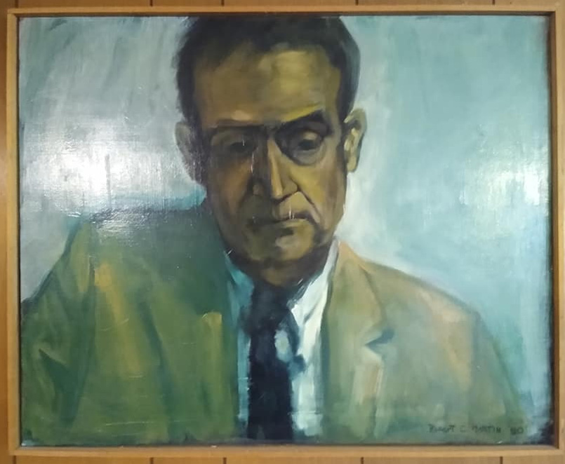 "Love this picture of Jex. Broody man, your grandpa, brilliant guy. Pianist, chess nut, book lover with a fine sense of humor." (Picture of Bob and Judy's dad, Jex.) |
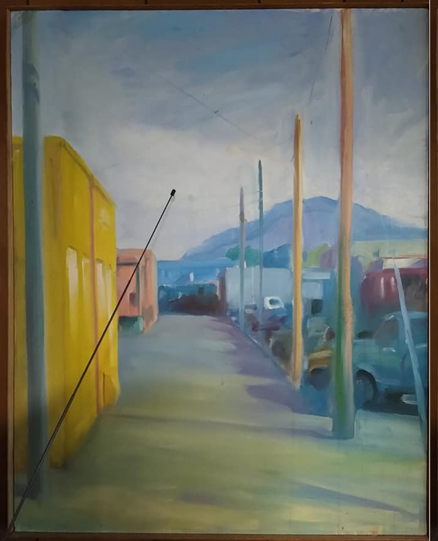 "Sorry about the tv antenna sticking itself into this Sedro Woolley street scene." |
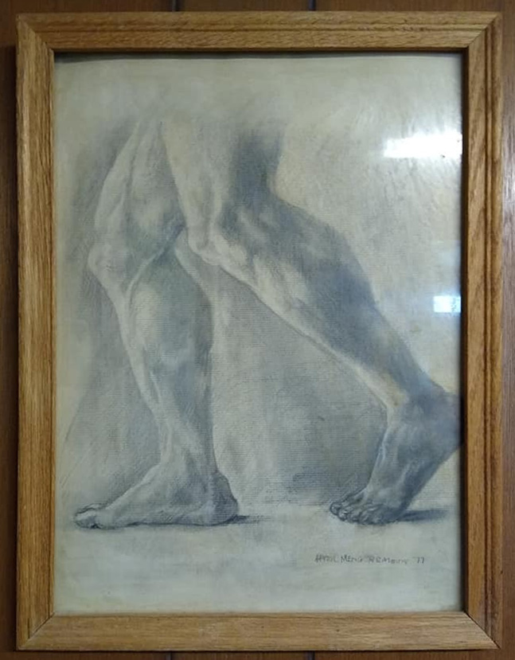 "This was a study Bob made in art class. Too cool for school, it lives in our living room." |
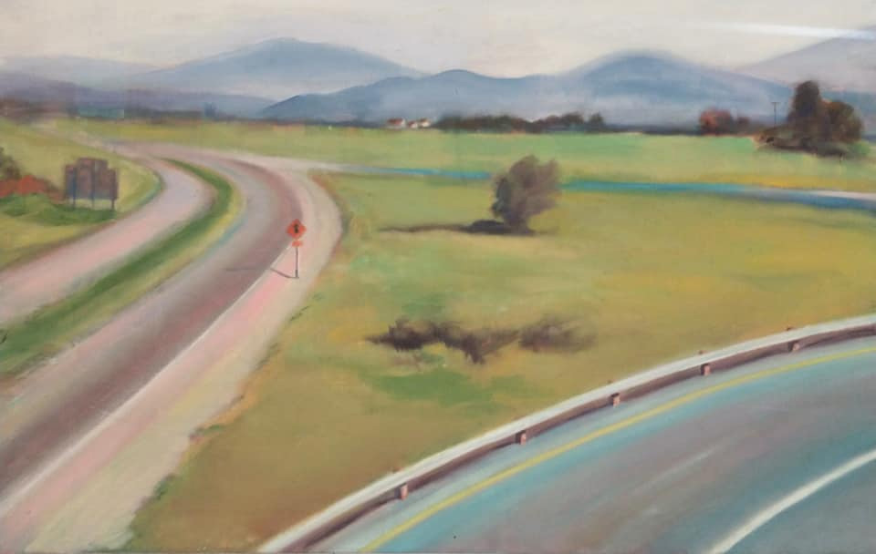 "Skagit County crossroads." |
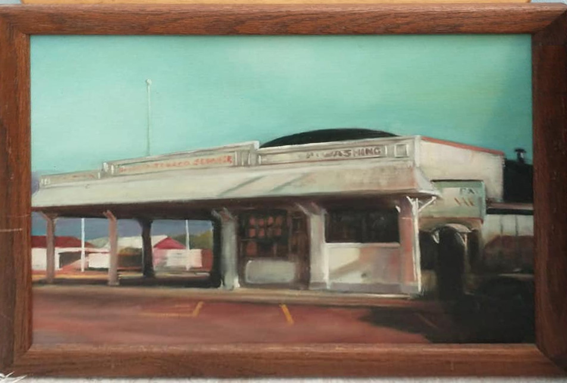 "Bob and Aggie's New and Used, a part of Sedro Woolley history." |
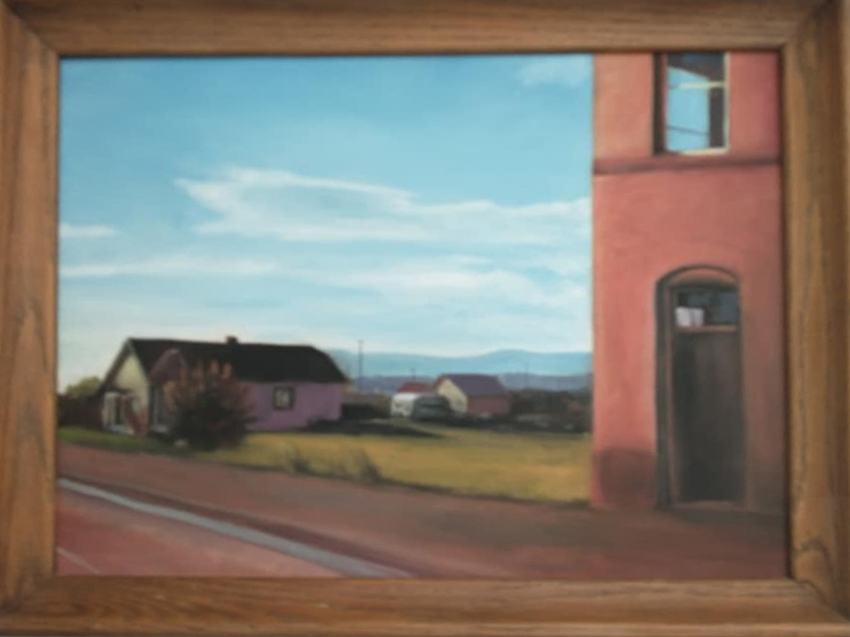 "Skagit Valley town and country." |
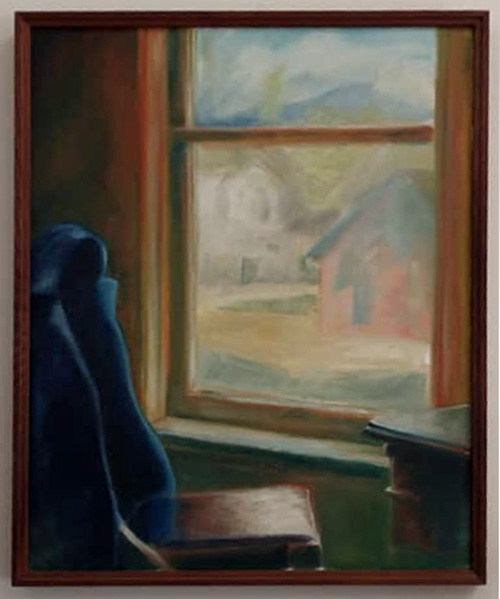 "Blue jacket on a chairback. A country view through the window.." |
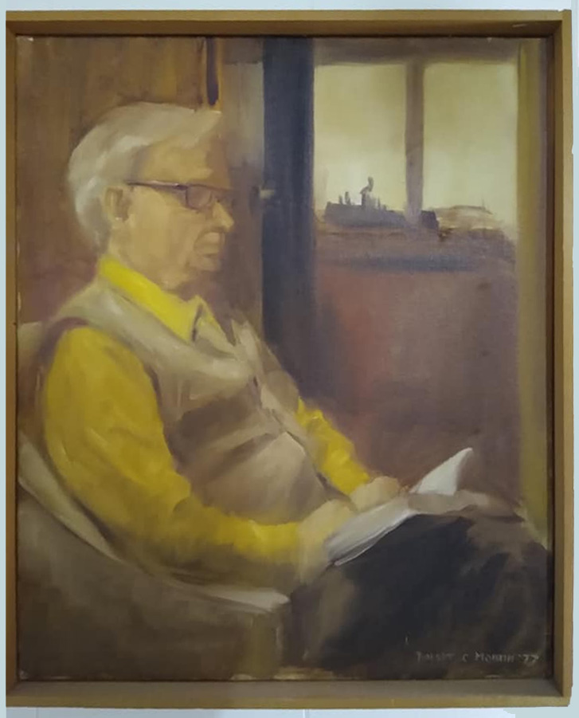 "This is a picture by Bob of my father, John Jex Martin, Jr. engaged in his favorite inactivity...reading." |
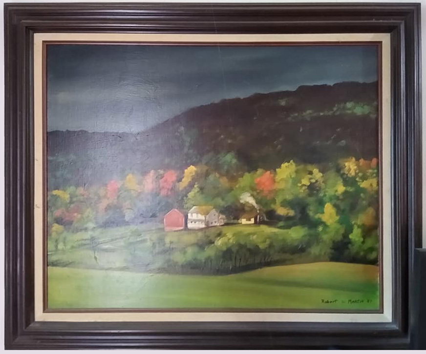 "This is a typical Skagit Valley scene, sun and leaden clouds." |
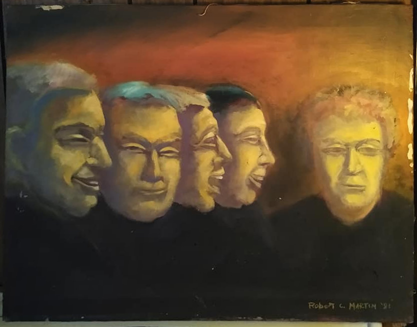 "I'm going to call this Inner Voices. It scares me a little. The portrait on the right is quite an accurate picture of my brother, Bob, post-Viet Nam and divorce. Too be honest, I nearly trashed this at the dump, but Andrew rescued it. It was painful to look at." |
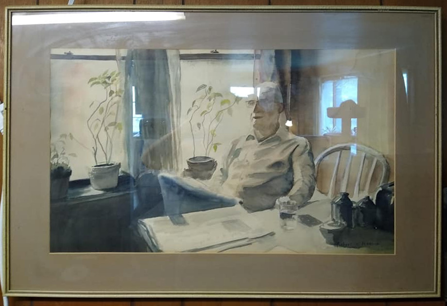 "This is a watercolor of your great grandfather, John Jex Martin, Sr. By Bob. There's a lot of reflections caused by ambient light in the living room. I love so much about this painting. The newspaper, water glass, Terra Cotta pots with wintered over Poinsettias, the chair. My grandpa! Love it." |